… в дождь. Да, это было известно изначально, однако мы не придали этому большого значения. Итак, за две недели до нового года мы решили отпраздновать его в лесу, а так как заодно с новым годом всем дарится целых 9 выходных, возникло желание уехать подальше и залезть поглубже, БВТ для этого отлично подходит. Изначально план был такой: приехать 31-ого декабря в 12 часов на Валдай, пройти тропу за 4 дня, 4-ого вечером заселиться на Валдае в квартиру, посмотреть город и 5-ого в 23:30 уже быть в Москве, но как оказалось, этот план был полностью обречен, тому было две причины: первая уже была названа - дождь, вторая - лыжи)), но обо всем по порядку.
Трек: nakarte.me
Итак, встав в 3 часа утра, и сменив две ласточки, в 12 часов мы оказываемся на ЖД вокзале города Валдай, вокруг гололед, около нулевая температура, с лыжами мы выглядим довольно нелепо, однако все равно выдвигаемся к началу тропы, от вокзала туда топать около 2.5 км.
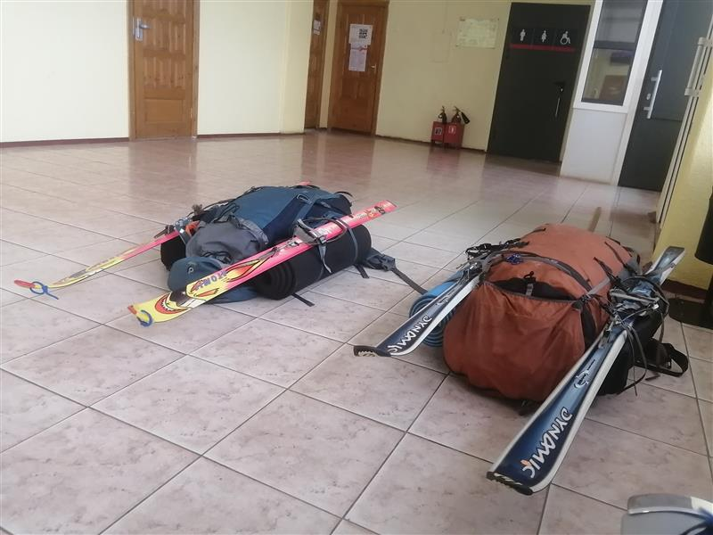
Первые километры идутся неплохо, снег довольно рыхлый, едется не очень, зато слабее проскальзывает, когда лезешь в горку.
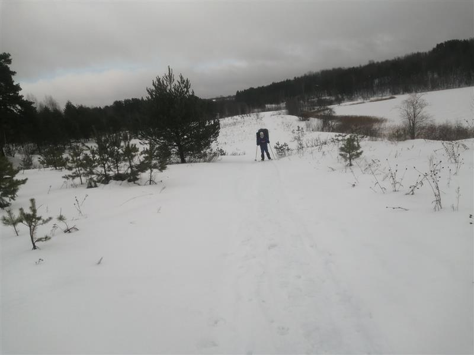
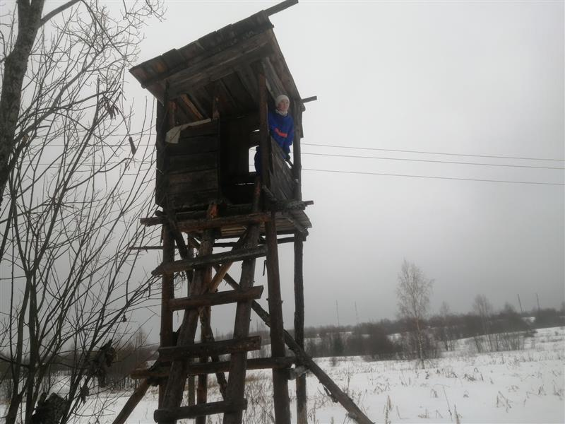
Доходим до знака «Большая Валдайская Тропа», уже смеркается, а позади чуть больше половины маршрута, мы уже начинаем уставать, лыжи начинают сильно проскальзывать, приходится их намазать. Уже хотим вставать около часовни «Параскевы Пятницы», однако находим в себе силы и ползем дальше, часа через два с половиной доходим наконец до стоянки на озере Находно. На стоянке обнаруживаем закопанные в снег дрова, откапываем их, и разводим костер (оказывается, такие дрова отлично горят, нам даже не потребовался хворост).
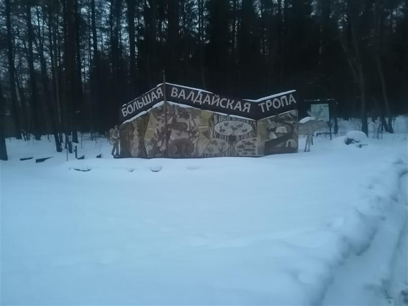
Готовим ужин, новогодний салат и глинтвейн, пытаемся досидеть до 00:00, однако у нас ничего не получается и мы засыпаем в пол двенадцатого. В полночь я просыпаюсь от очень сильных хлопков, оказывается, мы расположились рядом с домиками, где люди встречают новый год. В итоге после трех салютов, нам все-таки дают поспать.
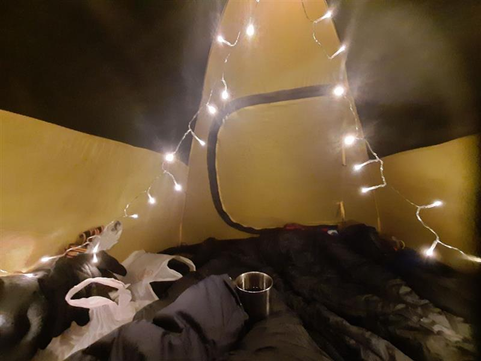
В итоге, ходовое время около 6.5 часов, пройдено 11 км.
Просыпаемся мы в 10:30 и это оказалось фатальной ошибкой, так как по итогу мы пропускаем очень много светового времени. Дров осталось еще много, поэтому спокойно готовим завтрак, греемся. Внезапно к нашей стоянке подъезжает машина, из нее выходит человек и направляется к нам, оказалось, что мужик просто хочет с друзьями пожарить шашлыки. Мы собираемся и выходим в пол второго.
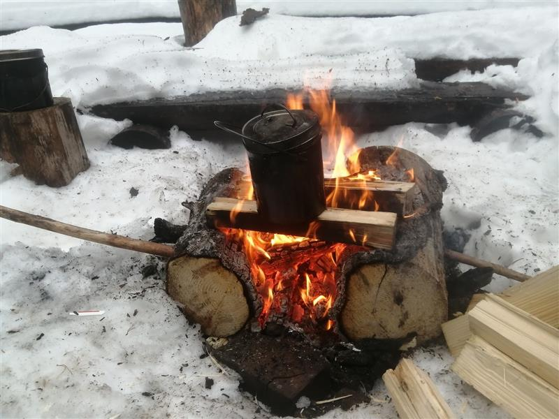
В лесу очень густой туман и практически сразу после нашего выхода начинает моросить, пока это даже не напрягает. Проходим по лесным тропам, и в итоге выходим на буранку, это открытое место, дождь уже начинает напрягать, привалы становятся дискомфортными. По буранке мы идем около 2 км, дальше начинается тропежка (пока еще по хорошей просеке) и не прекращается вплоть до стоянки.
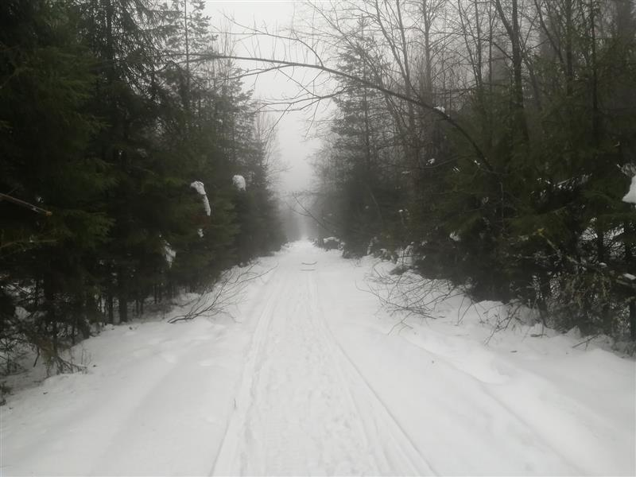
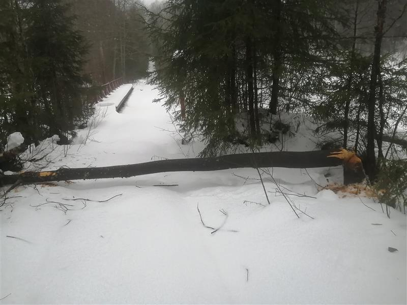
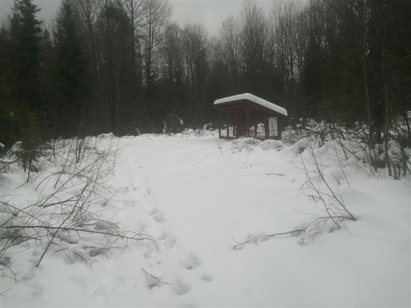
Обед мы решаем делать в укрытие от непогоды, дойдя до него понимаем, что мы насквозь сырые и нам очень холодно. Перекусываем, и отправляемся дальше. Сходим с просеки на лесную тропу, смеркается, мы очень мокрые и силы начинают заканчиваться, тут начинается самый неприятный участок маршрута, а именно очень крутые холмы. Тропа рассчитана на пешее прохождение, и для пешехода эти холмы скорее покажутся увлекательными, но не для нас. Во-первых, подняться почти на любую горку в лыжах сложно, так что иногда даже приходилось их снимать, во-вторых, снег все еще рыхлый и идется тяжело что в верх, что в низ, в третьих, как я уже писал выше, везде тропежка. В итоге в конце этих горок решаем идти без лыж, это оказывается значительно быстрее, но вскоре выходим на более менее ровный участок, надеваем лыжи и едем… не туда, да, ошибаемся и выезжаем к озеру не в том месте, немного плутаем и наконец выходим к стоянке, на часах 21:15.
Тут нас ждем разочарование, на стоянке совершенно нет дров, в итоге решаем готовить на костровой сетке, я собираю супер мокрые палочки (да, дождь еще идет) со всех окрестных ёлок, в итоге с божьей помощью разжигаем костер и готовим еду. Едим в палатке и вообще стараемся по минимуму выходить из нее, так как нам очень холодно. Однако, в палатке тоже все очень плохо, так как у нас мокрое почти все: спальники, пуховка, носки, ботинки… Засыпаем в этом замечательном болоте и спим до 9:00 2 января.
В итоге, ходовое время около 7 часов, пройдено 13 км.
Самый ужасный момент всего похода, начнем с того, что мы забыли открыть вентиляцию, поэтому все спальники оказались мокрые. Продолжим тем, что сегодня у нас «минус», а это значит, что замерзло все, что было мокрым), то есть все)). И так, вылезаю из спальника, надеваю ледяные штаны, ледяной анорак, ледяную пуховку, ледяные носки, бью ледяные ботинки об пол, чтобы они перестали быть каменными, и упаковываю ноги в ледяные бахилы. Не отчаиваемся, разжигаем костер из уже ледяных дров, тут выходит солнышко, немного поднимая нам настроение, это не очень спасает, так как нас пронизывает в прямом смысле леденящий холод.
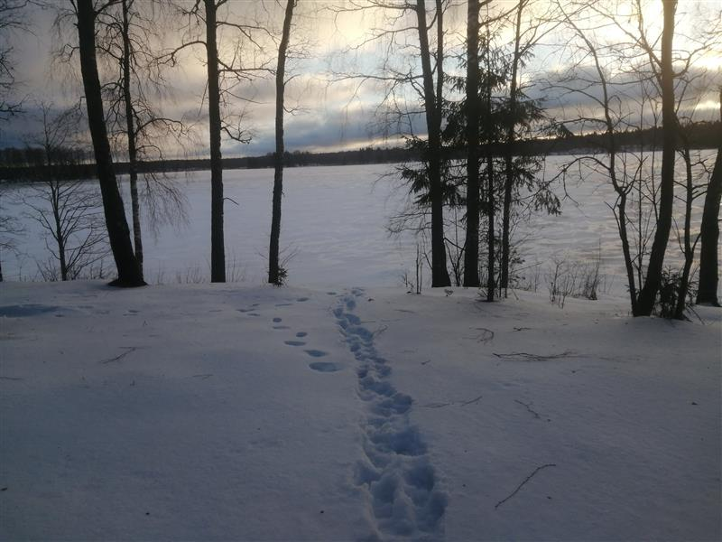
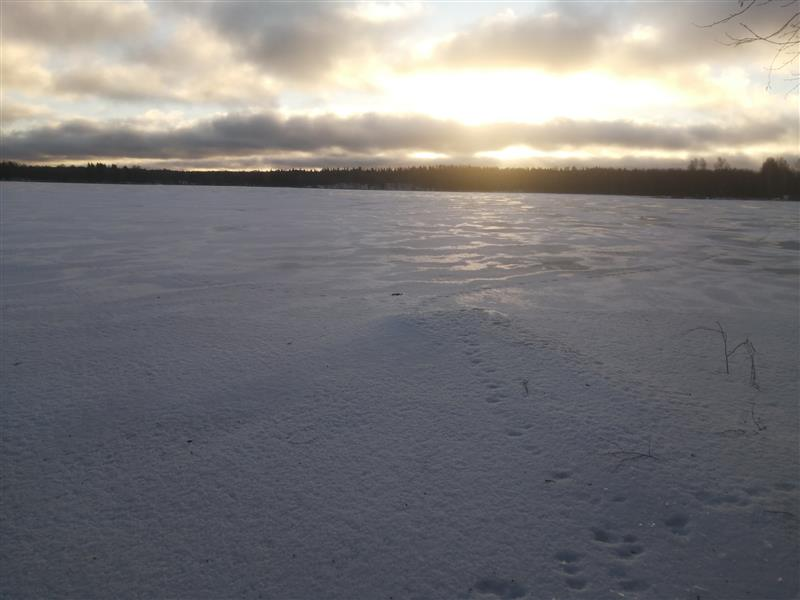
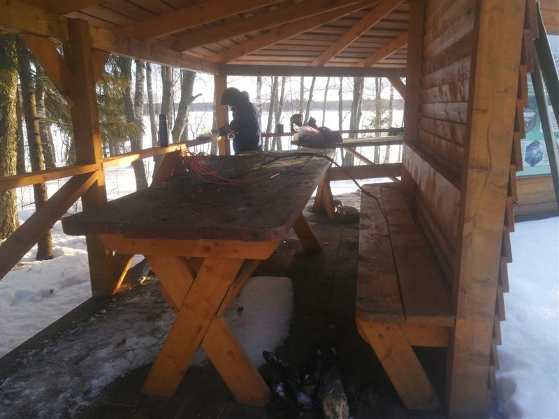
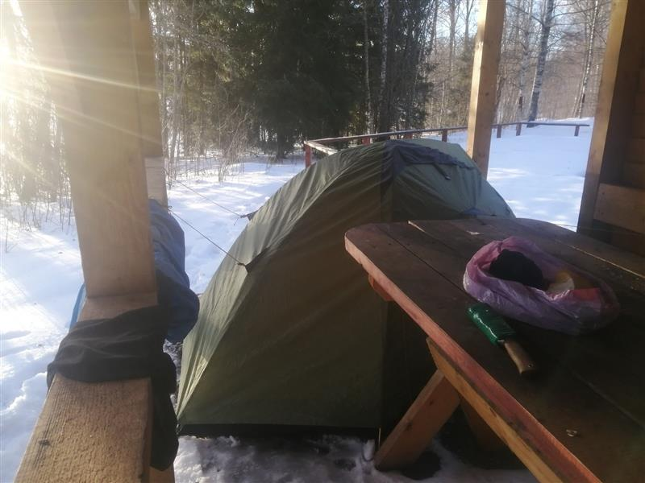
А вишенкой на торте оказывается то, что вся земля покрыта настом, который начал образовываться еще вчера вечером, но тогда он проламывался под нами, теперь же он больше походил на горки в Колвице, только там это было связано с тем, что снег сдувался сильными ветрами. Мы отважно пошли по этому насту, прошли 800 метров и поняли, что это конец, так как за 2 дня по ± нормальному снегу мы прошли чуть больше трети тропы (а должны были половину), что нам очень холодно и мы устали. В итоге в деревне миробудицы мы вызвали «Газель» и уехали на Валдай.
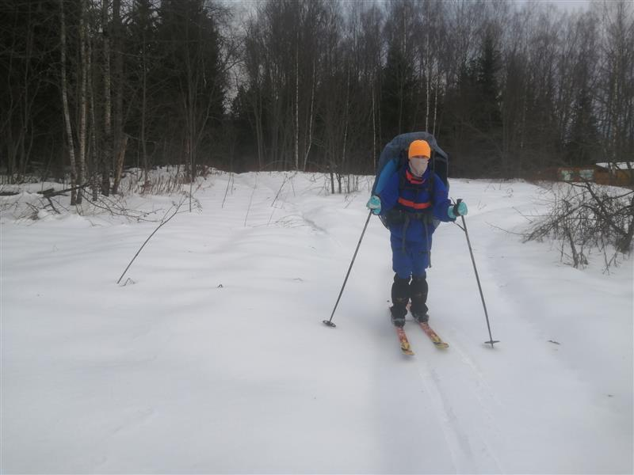